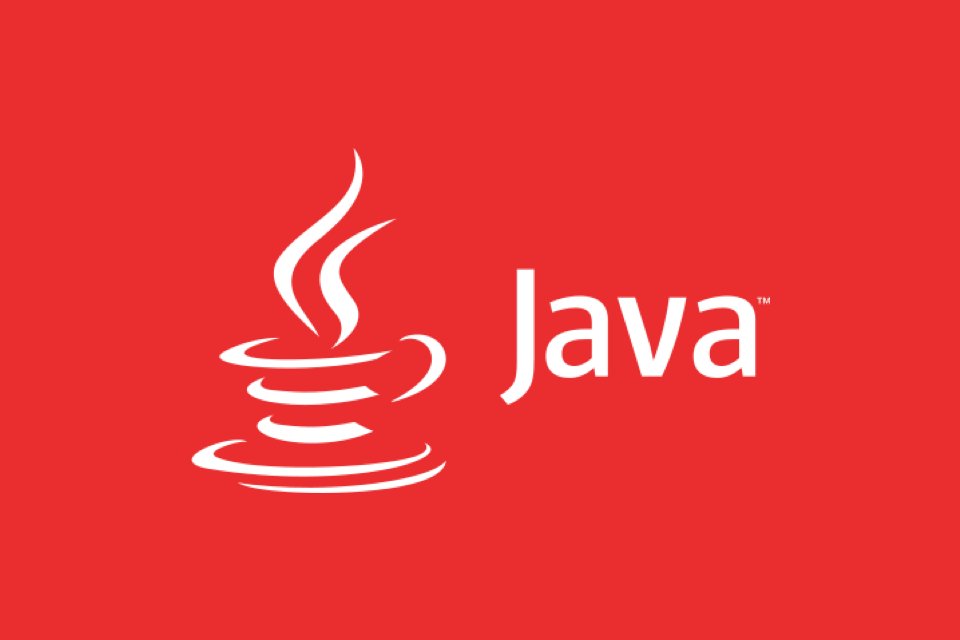
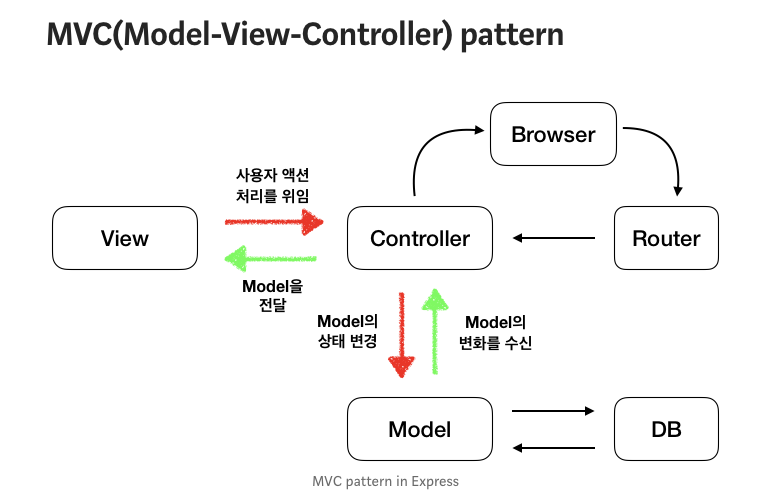

1. DAO (Data Access Object)
DAO는 Data Access Object의 약자로, DB의 데이터에 접근하기 위한 객체를 가리킨다. DB에 접근하기 위한 로직을 분리하기 위해 사용한다. 직접 DB에 접근하여 data를 삽입, 삭제, 조회 등 조작할 수 있는 기능을 수행한다.
MVC 패턴의 Model에서 이러한 일을 수행한다.
- 예시
@Repository
public class UserDao {
private JdbcTemplate jdbcTemplate;
@Autowired
public void setDataSource(DataSource dataSource){
this.jdbcTemplate = new JdbcTemplate(dataSource);
}
public long createUser(PostUserReq postUserReq){
String createUserQuery = "INSERT INTO Users(email, profilePicUrl, name, password)\n" +
"VALUES\n" +
" (?, ?, ?, ?);";
Object[] createUserQueryParams = new Object[]{postUserReq.getEmail(), postUserReq.getProfilePicUrl(),
postUserReq.getName(), postUserReq.getPassword()};
// 데이터 삽입 쿼리
this.jdbcTemplate.update(createUserQuery, createUserQueryParams);
String getNewUserIdQuery = "SELECT LAST_INSERT_ID();";
return this.jdbcTemplate.queryForObject(getNewUserIdQuery, long.class);
}
}2. DTO (Data Transfer Object)
DTO는 Data Transfer Object의 약자로, 계층 간(Controlelr, View, Business Layer) 데이터 교환을 위한 Java Bean를 의미한다. DTO는 로직을 가지지 않는 데이터 객체이고, getter, setter 메소드만 가진 클래스를 의미한다.
- 예시
@Getter
@Setter
public class GetUserRes {
private long userId;
private String userName;
private String email;
private String password;
}3. VO (Value Object)
VO는 Value Object의 약자로, Read-Only 속성을 가진 값 오브젝트이다. 자바에서 단순히 값 타입을 표현하기 위하여 불변 클래스(Read-Only)를 만들어 사용한다. 따라서 getter기능만 존재한다.
- 예시
@Getter
public enum BaseResponseStatus {
SUCCESS(true, 1000, "요청에 성공하였습니다."),
REQUEST_ERROR(false, 2000, "입력값을 확인해주세요."),
RESPONSE_ERROR(false, 3000, "값을 불러오는데 실패하였습니다."),
DATABASE_ERROR(false, 4000, "데이터베이스 연결에 실패하였습니다.");
private final boolean isSuccess;
private final int code;
private final String message;
private BaseResponseStatus(boolean isSuccess, int code, String message) {
this.isSuccess = isSuccess;
this.code = code;
this.message = message;
}
}위 코드는 BaseResponseStatus라는 enum으로 요청의 상태를 저장한 enum이다. 즉, 값은 고정되어 있고 불변하는 클래스이다.
❓ DTO vs VO
- DTO는
가변의 성격을 가진 클래스이며데이터 전송을 위해 존재한다. 따라서getter와setter기능을 모두 가지고 있다. - 그에 반해, VO는
값 그 자체의 의미를 가진불변 클래스(Read-Only)를 의미한다. 따라서getter기능만 존재한다.
→ DTO는 인스턴스 개념이라면, VO는 리터럴 개념으로 이해하면 편하다.
![profile]()
1개의 댓글
관심 있을 만한 포스트

DAO, DTO, VO,Entity 차이
완전 기본
2020년 10월 28일·0개의 댓글
by 김하영
13

.png)

.png)
잘읽고갑니다